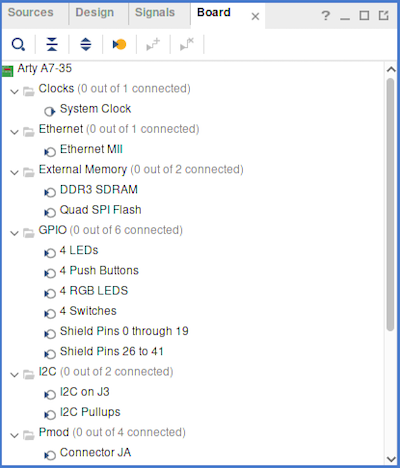
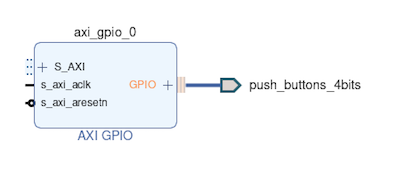
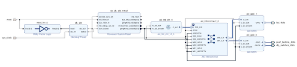
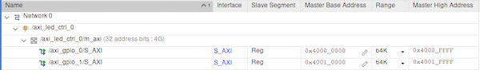
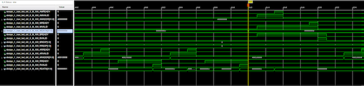

Digilent has on their website a small programming tutorial for the Arty-A7. It is a very simple demo in which the switches and push buttons are OR'ed to drive the LEDs. The implementation is just a few lines of Verilog:
module sw_btn_led(
input [3:0]sw,
input [3:0]btn,
output [3:0]led
);
assign led = sw | btn;
endmodule
The goal here is to achieve the same with Vivado block designs from scratch.
After downloading and installing the board support files for the Arty-A7, create a new project in Vivado with the Arty-A7 as target platform. Add a new block design to the project. Under the "Board" tab, you'll find a list of all the connections that the boards supports:
Dragging for example the "4 Push Buttons" onto the block diagram, will result into this:
Vivado has automatically added (or prompts you to add, depending on your settings) an "AXI GPIO" block. This is because Digilent has specified in their board support file that this peripheral is preferably used with a "AXI GPIO" block. This is defined in the board.xml file in the board support package:
<interface mode="master" name="push_buttons_4bits" type="xilinx.com:interface:gpio_rtl:1.0" of_component="push_buttons_4bits" preset_proc="push_buttons_4bits_preset">
<description>4 Push Buttons</description>
<preferred_ips>
<preferred_ip vendor="xilinx.com" library="ip" name="axi_gpio" order="0"/>
</preferred_ips>
<port_maps>
<port_map logical_port="TRI_I" physical_port="push_buttons_4bits_tri_i" dir="in" left="3" right="0">
<pin_maps>
<pin_map port_index="0" component_pin="push_buttons_4bits_tri_i_0"/>
<pin_map port_index="1" component_pin="push_buttons_4bits_tri_i_1"/>
<pin_map port_index="2" component_pin="push_buttons_4bits_tri_i_2"/>
<pin_map port_index="3" component_pin="push_buttons_4bits_tri_i_3"/>
</pin_maps>
</port_map>
</port_maps>
</interface>
The AXI GPIO block is not very complicated, and the AXI protocol is also manageable for the simple read/write operations that we are going to use for AXI GPIO (streaming and burst data transfers with multiple AXI master and slave modules on the bus quickly gets really complicated, as this blog post explains very well).
First we create a simple AXI master in VHDL. This module will read the states of the buttons and switches and drive the LEDs accordingly. In the AXI specification you can find which inputs and ouputs are required for the "Lite" version of the AXI protocol, which supports only simple read and write operations. Here is the entity specification with all the required inputs and outputs specified:
entity axi_led_ctrl is
Port (
-- General
m_axi_aclk : in std_logic;
m_axi_aresetn : in std_logic;
-- Write address channel
m_axi_awready : in std_logic;
m_axi_awvalid : out std_logic;
m_axi_awaddr : out std_logic_vector(31 downto 0);
m_axi_awprot : out std_logic_vector(2 downto 0);
-- Write data channel
m_axi_wready : in std_logic;
m_axi_wvalid : out std_logic;
m_axi_wdata : out std_logic_vector(31 downto 0);
-- Write response channel
m_axi_bvalid : in std_logic;
m_axi_bready : out std_logic;
-- Read address channel
m_axi_arready : in std_logic;
m_axi_arvalid : out std_logic;
m_axi_araddr : out std_logic_vector(31 downto 0);
m_axi_arprot : out std_logic_vector(2 downto 0);
-- Read data channel
m_axi_rready : out std_logic;
m_axi_rvalid : in std_logic;
m_axi_rdata : in std_logic_vector(31 downto 0)
);
end axi_led_ctrl;
Add a new VHDL source file to the project. You can specify the inputs and outputs in the wizard, or just copy the above into an empty source file. In this first version, I'm just going to have the module turn some LEDs on continuously. Later we'll add something more advanced. Add this below the interface specification in the same file:
architecture Behavioral of axi_led_ctrl is
signal clk : std_logic;
signal rstn : std_logic;
begin
-- Map general signals
clk <= m_axi_aclk;
rstn <= m_axi_aresetn;
-- Default protection flags
m_axi_awprot <= "000";
m_axi_arprot <= "000";
process(clk, rstn) is
begin
if rising_edge(clk) then
if rstn = '0' then
m_axi_awvalid <= '0';
m_axi_wvalid <= '0';
m_axi_arvalid <= '0';
else
-- Write to LEDs
m_axi_awvalid <= '1';
m_axi_awaddr <= x"40010000"; -- address of GPIO1
m_axi_wvalid <= '1';
m_axi_wdata <= x"0000000B"; -- LED3, 1 and 0 on
-- No reading
m_axi_arvalid <= '0';
end if;
end if;
end process;
end Behavioral;
Note the address of GPIO1; we will come back to that later.
Create a new block diagram and drag the "4 Push Buttons", "4 Switches" and "4 LEDs" onto the canvas, as well as our master controller. Vivado will help with auto routing and connections, and will (should) ask to add the following components (your mileage may vary, since a lot seems to depend on the order in which you add things to the block design):
It should also connect to the reset button and the board's sys_clock. The reset button is active low, so Vivado will also add an inverter to connect the reset to the clocking wizard, which has an active high reset. In the end, the block design should look like this (click for larger):
Open the address editor to check which addresses Vivado assigned to which GPIO block. As you can see, I have both the push buttons and the switches on axi_gpio_0 and the LEDs on axi_gpio_1. Here is my address map:
Note that the LEDs are at 0x40010000, which corresponds to the address in the AXI master.
You cannot synthesize the block design directly (explanation). Create a HDL wrapper first and then follow the design flow: synthesis, implementation and bitstream generation. Finally, program the device and see LED3, LED1 and LED0 come on.
In order to read the switches and buttons, we need to actually implement some logic to get the data over the AXI bus. The protocol is well documented (specification) and the principle is straightforward:
To write data somewhere, the sequence of events is roughly as follows:
For reading data from somewhere, it is more or less similar, except that there is no read response:
There is a good explanation written down here.
I use a state machine to correctly implement the AXI protocol and the transitions between the various phases. The state machine has seven states:
type state_t is (Idle, ReadSwitchAddr, ReadSwitchData, ReadButtonAddr, ReadButtonData, WriteLed, NoOp);
I didn't bother to make separate states for the write address channel and the write response, since I'm always writing to the same address. I didn't handle the write response in a separate state either, since if writing to the LEDs failed I had no other way to signal the error anyway.
Since all channels use the same handshake protocol, it is a good idea to make a procedure for it:
procedure waitXferComplete(
signal valid : out std_logic;
signal ack : in std_logic;
variable complete : inout boolean;
signal state : inout state_t;
constant next_state : in state_t
) is
begin
if complete = false then
valid <= '1';
state <= state;
if ack = '1' then
valid <= '0';
complete := true;
if next_state /= NoOp then
state <= next_state;
end if;
end if;
else
valid <= '0';
state <= state;
end if;
end procedure;
The ack signal is defined as the logical and of VALID and READY. As soon as the transfer is complete, it deasserts the valid signal and transitions to the next state. I pass in the state of the state machine that should be next once the transfer is completed. I abuse the `NoOp` state so I can run multiple instances of this procedure in parallel with only one triggering a state transition (I do this in the WriteLed state). Here is a condensed version of how it is used:
arack <= arvalid and M_AXI_ARREADY;
-- ...
process(clk, resetn, ..., arack, ...) is
-- ...
variable arcomplete : boolean := false;
-- ...
begin
if rising_edge(clk) then
case state is
-- ...
when ReadSwitchAddr =>
M_AXI_ARADDR <= x"40010000";
waitXferComplete(arvalid, arack, arcomplete, state, ReadSwitchData);
-- ...
end process;
Note that in the read data state, the ready signal takes the place of the valid signal, as the roles of master and slave are reversed for the handshake.
I choose to keep the logic of mapping switch and button states to LED states outside the process:
M_AXI_WDATA <= switch_state or button_state;
The registers with the switch and button states are read in a process separate from the state machine:
process(clk, state, rack, M_AXI_RDATA) is
begin
if rising_edge(clk) then
if rack = '1' and state = ReadSwitchData then
switch_state <= M_AXI_RDATA;
elsif rack = '1' and state = ReadButtonData then
button_state <= M_AXI_RDATA;
end if;
end if;
end process;
Here is the entire VHDL code for the updated AXI master. Adding the Xilinx Integrated Logic Analyzer to the block diagram allows to trace signals on the board. I put a trigger on a speciif value (0xd) of the write data channel so that the trace can be triggered by a button press (click for larger):
The trace shows an entire cycle of the state machine. On the left, we see two read cycles: one for the switches at 0x40010000 and one for the buttons at 0x40010008. Because the two registers with the switch and button states are wired directly onto the write data signal, this is where the ILA triggers. On the right of the trigger we see from top to bottom: the write address transaction, the write data transaction and the write response transaction (note how the signals AWVALID and WVALID and BREADY are kept high due to my aforementioned laziness for not implementing separate states). On the far right we see the Idle state and the beginning of the next read address state.
Home | Last update: 2021-12-12